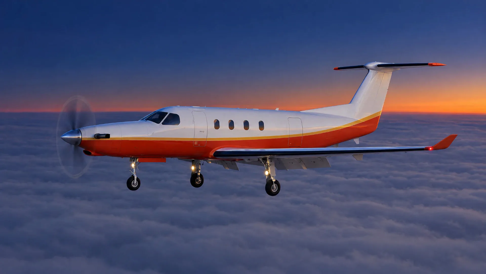
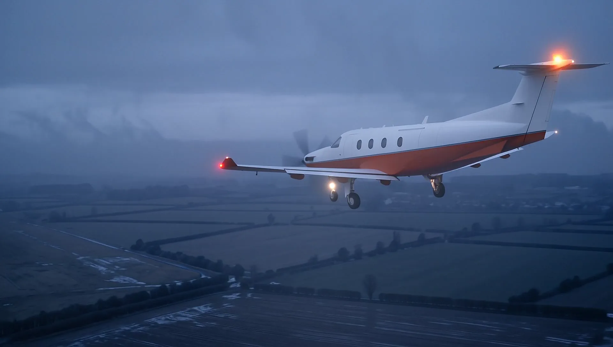

低云进近：决断高度前的那两秒
云底 300 英尺，能见度 2000 米。从最后进近点到决断高度，我的注意力怎么分配，又在哪一刻把眼睛交给窗外。
预计 8 分钟

01 / ABOUT
我是机长，飞 PC-12 NGX，跑短途支线。航段短，一天要起降好几次。
这些航线没有长巡航可以喘口气。起飞、爬升、进近、落地，然后再来一遍。小机场跑道短，备降场远，天气说变就变，很多决定要在地面上做完。
我写这个博客，想把驾驶舱里的事讲清楚：一个数字从哪里来，一条程序为什么这样写，一次进近里我在看什么。同行可以拿来对照，没飞过的人也看得懂。
不露脸，不写公司，只写飞行。
02 / LOG
在写 5 篇
落地之后写。每篇只讲一件事，写完先对一遍手册。

FAP 1500
GS 3.0°
DA 200
RWY 24
ILS 示意 · 按住下降
按住按钮，沿下滑道降到决断高度。中途松手，就是复飞。
已截获下滑道，等你按住。
云底 300 英尺，能见度 2000 米。从最后进近点到决断高度，我的注意力怎么分配，又在哪一刻把眼睛交给窗外。
预计 8 分钟
起飞距离、着陆距离、湿跑道修正、温度和坡度。在一条短跑道上，性能图表比手感可靠。这篇把一次完整的计算从头走一遍。
预计 7 分钟
PC-12 获准在已知结冰条件下飞行。获准飞，和今天该不该飞，是两个问题。这篇讲我怎么看云、看温度，什么情况下直接改天。
预计 9 分钟
PT6 很少停车，可飞机上只有这一台。每一段起飞前，我先找好滑翔得到的落地点，再定航路和高度。
预计 6 分钟
从登机门出发，绕飞机走一圈。桨叶、滑油、进气道、除冰靴、静压孔，每一项为什么在检查单上，这篇逐项讲。
预计 5 分钟
这几篇还在写，写完一篇放一篇。
订阅飞行日志单发涡桨 · 轻型 · 可单人驾驶仪表飞行 · 获准在已知结冰条件下飞行
03 / TYPE
一台发动机，五片桨叶，一个 T 型尾翼。下面这些数字，都查得到出处。
数据来自 Pilatus 公开资料，条件为海平面、标准大气、干燥铺装跑道。实际运行以飞机飞行手册为准。
按用途上架的 AI 工具，每样写清它擅长什么、在国内能不能直接打开。本站的 AI 助手也在这一栏。
货架上的工具与本站没有合作关系，链接直达官网。
CHECKLIST · 读之前
05 / FAQ
我是现役机长，飞 PC-12 NGX 短途支线。匿名写，技术问题可以讲得更直接。
这里写的是个人经验和理解。训练和运行，以飞机飞行手册、公司程序和你的教员为准。文中引用的数字会注明出处。
PC-12 用的是 PT6 系列发动机，六十年代投入使用，是装机最多的涡桨发动机之一。单发的不同在计划：每一段都先想好发动机停车后往哪里滑翔、在哪里落地，航路、高度和天气按这个来定。
每篇一封邮件。不发广告，不转让邮箱，随时退订。订阅通道还在接入，开通之前提交的邮箱不会被保存。
06 / SUBSCRIBE
最低标准写在起飞前，日志写在落地后。
新的一篇写完，发到你的邮箱。